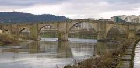
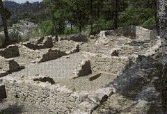

ORENSE
Los romanos hallaron
un emplazamiento ideal para asentar la capital de
las tierras del oro… De aquella Auria inicial, surgió la actual ciudad de
Orense.
|
 |
De los restos romanos de Orense
destaca el
Ponte Vella,
puente romano de época de Augusto del que sólo quedan algunos sillares
almohadillados en las bases. Los historiadores no se ponen de acuerdo en cual fue la razón de que Orense
naciera, si fue por el del río, el puente, de las Burgas o del oro… Sea
como fuere lo que sabemos es que nació Auria, la
ciudad de oro, capital de las tierras del oro, en la margen izquierda del Miño,
alrededor de Las Burgas. |
|
Su nombre proviene del Or Ens, agua caliente, de los
celtas; o del romano Auria, iudad de oro, o lugar luminoso y brillante, Ourense que la tradición quiere fundada por el héroe griego Amphiloco.
A escasos 3 km de la ciudad, se encuentra el Conjunto
arqueológico de
Santome, un
castro y un asentamiento galaico-romano con un bosque autóctono.
Por Ourense pasa la Vía Romana llamada Vía Nova o Vía XVIII del
itinerario de Antonino, salimos de Ourense por la carretera C-536. |
 |
Comenzamos el recorrido en Castro Caldelas por la C-536, pasando al lado
de Ponte Navea hasta Trives Vello parroquia del Ayuntamiento de Pobra de
Trives. Los restos romanos aquí encontrados hacen suponer que fue una mansión
romana. Continuamos por la comarcal encontramos con Ponte Cabalar y Ponte
Bibei. Siguiendo por los impresionantes “Codos do Larouco”, verdadera
obra de ingeniería romana de la Vía XVIII, hasta A Rúa. La historia de la Rúa
está ligada a Roma; en ella se fundó la mansión Foro Cigurrurum. En Barco desde Valdeorras,
podemos visitar O Castro.
|